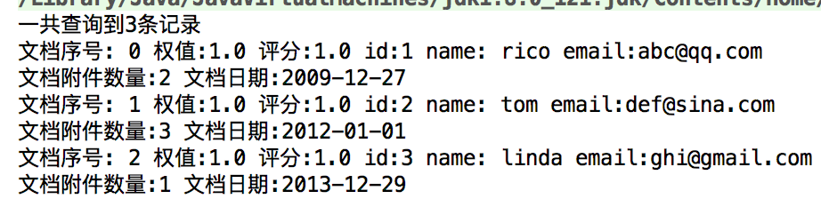
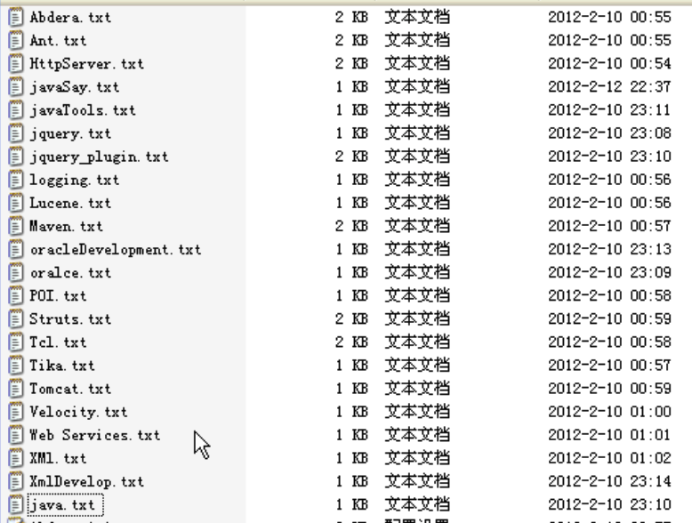

Lucene入门
Lucene简介和创建索引初步
在全文索引工具中，都是由这三部分组成
- 索引部分
- 分词部分
- 搜索部分
HelloLucene.java
public class HelloLucene {
/**
* 建立索引
*/
public void createIndex() {
//1. 创建Directory 索引存放位置：硬盘,内存
//Directory directory=new RAMDirectory();//索引建在内存中
Directory directory= null;
try {
directory = FSDirectory.open(new File("/Users/xxx/workspace/LuceneDemo/hellolucene/index"));
} catch (IOException e) {
e.printStackTrace();
}
//2. 创建IndexWriter 通过IndexWriter来写我们的索引
IndexWriterConfig indexWriterConfig=new IndexWriterConfig(Version.LUCENE_35,new StandardAnalyzer(Version.LUCENE_35));//第一个参数是需要匹配的版本在2.9之后，Lucene不是全部兼容的了,第二个参数时分词器，我们这里创建了一个标准的分词器,里面也需要传入版本号
IndexWriter indexWriter=null;
try {
//3.5版本之前的Lucene创建IndexWriter是这样的
//new IndexWriter(Directory d路径, Analyzer a分词器,boolean create是否每次都是重新创建索引 false会在原来的后面追加,MaxFieldLength mfl Filed域最大值)
indexWriter=new IndexWriter(directory,indexWriterConfig);
//3. 创建Document对象 (里面有标题，文档大小，文档路径，文档内容等等)
Document doc=null;
File docDir=new File("/Users/xxx/workspace/LuceneDemo/hellolucene/doc");
for(File file:docDir.listFiles()){
//3. 创建Document对象 (里面有标题，文档大小，文档路径，文档内容等等)
doc=new Document();
//4. 为Document添加Field
doc.add(new Field("content",new FileReader(file)));//内容 通过filereader读进来的内容默认是不存储的 如果要存储，需要把文件的内容转成字符串然后和下面的一样添加
doc.add(new Field("filename",file.getName(),Field.Store.YES,Field.Index.NOT_ANALYZED));//把文件名存储到硬盘中,文件名不需要分词
doc.add(new Field("path",file.getAbsolutePath(),Field.Store.YES,Field.Index.NOT_ANALYZED));//需要存储，也不需要分词
//5. 通过IndexWriter添加文档到索引中
indexWriter.addDocument(doc);
}
} catch (IOException e) {
e.printStackTrace();
}finally {//indexWriter必须关闭
if(indexWriter!=null){
try {
indexWriter.close();
} catch (IOException e) {
e.printStackTrace();
}
}
}
}
}
HelloLuceneTest.java
package com.hikvison;
import org.junit.Test;
public class HelloLuceneTest {
HelloLucene helloLucene=new HelloLucene();
@Test
public void testCreateIndex(){
helloLucene.createIndex();
}
}
运行完单元测试之后文件夹里多出来很多Lucene的文件，其中segments_1是段文件 Lucene首先会在段文件中找相应的索引信息

搜索初步
/**
* 搜索
*/
public void searcher(){
//1. 创建Directory
Directory directory= null;
try {
directory = FSDirectory.open(new File("/Users/xxx/workspace/LuceneDemo/hellolucene/index"));
} catch (IOException e) {
e.printStackTrace();
}
//2. 创建IndexReader
IndexReader indexReader=null;
try {
indexReader=IndexReader.open(directory);
} catch (IOException e) {
e.printStackTrace();
}
//3. 根据IndexReader创建IndexSearch
IndexSearcher indexSearcher=new IndexSearcher(indexReader);
//创建parser来确定要搜索文件的内容,第二个参数表示搜索的域
QueryParser queryParser=new QueryParser(Version.LUCENE_35,"content",new StandardAnalyzer(Version.LUCENE_35));//第一个参数时版本,第二个参数时默认搜索域,第三个参数时分词器,其中分词器构造函数也需要版本
//4. 创建搜索的Query 有很多Query，我们这里用最简单的QueryParser
//根据QueryParser来创建Query 搜索域content中包含GIS的内容
Query query=null;
try {
query=queryParser.parse("OpenLayers");//搜索的内容包含GIS的文档
} catch (ParseException e) {
e.printStackTrace();
}
//5. 根据Search搜索并且返回TopDocs
TopDocs topDocs=null;
try {
topDocs=indexSearcher.search(query,10);//第二个表示搜索几条
} catch (IOException e) {
e.printStackTrace();
}
//6. 根据TopDocs获取ScoreDoc对象
//TopDocs中存着ScoreDoc,是评分对象
ScoreDoc[] scoreDoc=topDocs.scoreDocs;
for(ScoreDoc sd:scoreDoc){
//7. 根据Searcher和ScoreDoc对象获取具体的Document对象
Document document=null;
try {
document=indexSearcher.doc(sd.doc);
} catch (IOException e) {
e.printStackTrace();
}
//8. 根据Document对象获取需要的值
System.out.println("文件名"+document.get("filename")+",文件路径"+document.get("path"));
}
//9. 关闭IndexReader
try {
indexReader.close();
} catch (IOException e) {
e.printStackTrace();
}
}
索引创建 域选项
索引建立步骤
1创建Directory
2创建Writer
3创建文档并且添加索引
4查询索引的基本信息
5删除和更新索引
存储域选项
Field.Store.YES表示会把这个域中的内容完全存储到文件中，方便进行还原
Field.Store.YES表示不存储内容到文件中,但是可以被索引 ,此时内容无法被还原(doc.get)
索引域选项

Field.Index.ANALYZED 进行分词和索引，适用于标题，内容等
Field.Index.NOT_ANALYZED 进行索引，但是不进行分词，如果身份证号，姓名，ID等，适用于精确搜索
Field.Index.ANALYZED_NO_NORMS 进行分词但不存储norms信息,这个norms包括了创建索引时间和权值等信息 排序有自己内部的评分规则 norms里面有些是因素
Field.Index.NOT_ANALYZED_NO_NORMS 不分词也不存储norms信息
Field.Index.NO 不进行索引
fnm保存着域的信息
fdx和fdt保存着Store为YES的属性信息
frq 保存着哪些出现多少次,哪些相同的单词出现多少次
nrm存储评分信息
prx偏移量
tii和tis存储索引里面所有信息
任一文件被删除索引就失效
public class IndexUtil {
private String[] ids={"1","2","3","4","5","6"};
private String[] emails={"abc@qq.com","def@sina.com","ghi@gmail.com","rico@foxmail.com","jkl@163.com","mno@outlook.com"};
private String[] content={
"The apple is a deciduous tree, generally standing,China is its biggest market",
"China, officially the People's Republic of China (PRC), is a unitary sovereign state in East Asia",
"Donald John Trump (born June 14, 1946) is the 45th and current President of the United States, in office since January 20, 2017. Before entering politics, he was a businessman and television personality.He comes to China at 2017.10",
"Bees are flying insects closely related to wasps and ants,",
"Kotlin is a statically-typed programming language that runs on the Java virtual machine and also can be compiled to JavaScript source code or use the LLVM compiler infrastructure",
"he Yangtze , which is 6380 km long, is the longest river in Asia and the third-longest in the world"
};//邮件内容
private int[] attachs={2,3,1,4,5,5};//附件数量
private String[] names={"rico","tom","linda","jake","rose","hanmeimei"};
private Directory directory=null;
public IndexUtil(){
try {
//创建Directory
directory= FSDirectory.open(new File("/Users/xxx/workspace/LuceneDemo/lucene_index/index"));
} catch (IOException e) {
e.printStackTrace();
}
}
public void index() throws IOException {
IndexWriter indexWriter=null;
try {
//创建IndexWriter
indexWriter=new IndexWriter(directory,new IndexWriterConfig(Version.LUCENE_35,new StandardAnalyzer(Version.LUCENE_35)));
Document doc=null;//Document相当于数据库表里的每一条记录 域相当于表中的每一个字段
for(int i=0;i<ids.length;i++){
doc=new Document();//创建文档
//域存储选项和域索引选项
doc.add(new Field("id",ids[i],Field.Store.YES,Field.Index.NOT_ANALYZED_NO_NORMS));//Field相当于一个字段 Field.Store.YES表示是否把数据存储在索引里,将来可以把数据进行还原,id一般都要存储,邮件地址也要存储,内容不需要存储 id不需要分词也不需要加权
doc.add(new Field("email",emails[i],Field.Store.YES,Field.Index.NOT_ANALYZED));//不分词，要加权
doc.add(new Field("content",content[i],Field.Store.NO,Field.Index.ANALYZED));//要分词
doc.add(new Field("names",names[i],Field.Store.YES,Field.Index.NOT_ANALYZED_NO_NORMS));
indexWriter.addDocument(doc);
indexReader.close();
}
} catch (IOException e) {
e.printStackTrace();
}finally {
if(indexWriter!=null){
indexWriter.close();
}
}
}
public void query(){
IndexReader indexReader=null;//使用IndexReader进行查询
try {
indexReader=IndexReader.open(directory);
System.out.println("存储的doc数: "+indexReader.numDocs());
System.out.println("doc的总数: "+indexReader.maxDoc());
indexReader.close();
} catch (IOException e) {
e.printStackTrace();
}
}
}
索引的删除和更新
删除
public void delete() throws IOException {
IndexWriter indexWriter=null;
try {
indexWriter=new IndexWriter(directory,new IndexWriterConfig(Version.LUCENE_35,new StandardAnalyzer(Version.LUCENE_35)));
//参数时一个选项，可以使一个query,query的结果可能是系列结果,可以把一系列全部删除 也可以是term term是精确查找的值
indexWriter.deleteDocuments(new Term("id","1"));//删除id为1的
indexWriter.close();
} catch (IOException e) {
e.printStackTrace();
}finally {
if(indexWriter!=null){
indexWriter.close();
}
}
}
@Test
public void testDelete() throws IOException {
IndexUtil indexUtil=new IndexUtil();
indexUtil.delete();
}
删除完之后再查询一下

Lucene像Windows一样，有回收站，删除的文档并不会完全删除,删完存储在回收站里面,删错了可以从回收站里恢复的,实际只有5个了，而且回收站里的搜索不了,删完之后索引文件多了一个.del 文件,删除的都在里面
query里面加一行System.out.println("删除的文档数:"+indexReader.numDeletedDocs());可以输出删除的文档数目
public void recovery(){
//使用IndexReader来恢复
IndexReader reader= null;
try {
reader = IndexReader.open(directory);
reader.undeleteAll();
reader.close();
} catch (IOException e) {
e.printStackTrace();
}
}
运行报错了

是read only 如果是true，无法恢复 read本用于读的，所以默认readonly为true我们改为false
public void recovery(){
//使用IndexReader来恢复
IndexReader reader= null;
try {
reader = IndexReader.open(directory,false);//第二个参数是read only 如果是true，无法恢复 read本用于读的，所以默认readonly为true
reader.undeleteAll();
reader.close();
} catch (IOException e) {
e.printStackTrace();
}
}
我们执行一遍恢复再执行一遍查询
而且目录下.del文件也删除了
那么我们如何彻底删除 呢？
3.5版本之前IndexWriter有个方法optimize (优化),但是已经被废弃了，因为一旦优化就要全部更新索引,负载很大,现在是forceMerge
我们再执行一下删除方法,然后再执行一下下面的方法
public void forceDelete() throws IOException {
IndexWriter indexWriter=null;
try {
indexWriter=new IndexWriter(directory,new IndexWriterConfig(Version.LUCENE_35,new StandardAnalyzer(Version.LUCENE_35)));
indexWriter.forceMergeDeletes();
indexWriter.close();
} catch (IOException e) {
e.printStackTrace();
}finally {
if(indexWriter!=null){
indexWriter.close();
}
}
}
这样就彻底删除了
当我们索引超出一定量的时候，Lucene会自动帮我们优化的,当然我们也可以手动强制更新
indexWriter.deleteAll();可以立即彻底删除所有索引
更新
更新前
存储的doc数: 6
doc的总数: 6
删除的文档数:0
更新的代码
public void update() throws IOException {
IndexWriter indexWriter=null;
try {
indexWriter=new IndexWriter(directory,new IndexWriterConfig(Version.LUCENE_35,new StandardAnalyzer(Version.LUCENE_35)));
/*Lucene并没有提供更新方法,这里的更新操作其实是2个操作的集合
*先删除之后再添加
*/
Document doc=new Document();
doc.add(new Field("id","11",Field.Store.YES,Field.Index.NOT_ANALYZED_NO_NORMS));//Field相当于一个字段 Field.Store.YES表示是否把数据存储在索引里,将来可以把数据进行还原,id一般都要存储,邮件地址也要存储,内容不需要存储 id不需要分词也不需要加权
doc.add(new Field("email",emails[0],Field.Store.YES,Field.Index.NOT_ANALYZED));//不分词，要加权
doc.add(new Field("content",content[0],Field.Store.NO,Field.Index.ANALYZED));//要分词
doc.add(new Field("names",names[0],Field.Store.YES,Field.Index.NOT_ANALYZED_NO_NORMS));
indexWriter.updateDocument(new Term("id","1"),doc);//第一个参数：匹配的Term 第二个新传入Document
//其实是先把id为1的进行删除,
indexWriter.close();
} catch (IOException e) {
e.printStackTrace();
}finally {
if(indexWriter!=null){
indexWriter.close();
}
}
}
更新后
存储的doc数: 6
doc的总数: 7
删除的文档数:1
说明了更新的确是先删除再增加
总结：删除
存到回收站中
恢复删除 IndexReader.undeleteAll
强制删除 3.5之前optimize 之后 forceMergeDelete
优化合并 (不建议使用)
writer.forceMerge(2)
更新索引(先删除后添加)

索引加权操作
在建索引的时候可以为文档加权
doc.setBoost();//默认是1.0 值越高说明加权值也就越高，得分越高,排序越靠前
搜索的代码
public void search(){
IndexReader indexReader=null;
try {
indexReader=IndexReader.open(directory);
IndexSearcher searcher=new IndexSearcher(indexReader);
TermQuery termQuery=new TermQuery(new Term("content","china"));//搜索content字段中包含China的
TopDocs tds=searcher.search(termQuery,10);//搜索前10条
for(ScoreDoc sd:tds.scoreDocs){
Document doc=searcher.doc(sd.doc);
System.out.println("文档序号: "+sd.doc+" id:"+doc.get("id")+" name: "+doc.get("names")+" email:"+doc.get("email"));
}
} catch (IOException e) {
e.printStackTrace();
}
}
重新删除索引，重建索引，然后运行搜索的测试用例
结果

tom的排名第一，然后是rico的，然后是linda
为什么这么排序呢？
我们看一下数据发现 tom的content里面出现了多次china
所以他排名高一点，那么后面2位的排名为什么这么排我们就不得而知了
接着我们加入评分

再运行搜索，结果

这是因为qq.com的权重高,gmail的次之
使用Luke工具查看索引

norm是加权信息 分数 这里我们存储了email id names 没有存储content
创建索引时我们没有对email分词，所以这里显示的也的确是没有分词
对时间和日期进行索引

name是String,value还是String，所以不能用Field,要用NumberField
doc.add(new NumericField("attach",Field.Store.YES,true).setIntValue(attachs[i]));//存储附件 存储,索引,不分词, 默认就不分词也没有权值，所以没有这个选项
doc.add(new NumericField("date",Field.Store.YES,true).setLongValue(dates[i].getTime()));//存储日期 存储+索引(方便根据日期查找)
拿到结果
SimpleDateFormat sdf = new SimpleDateFormat("yyyy-MM-dd");
Long dateLong=Long.valueOf(doc.get("date"));
Date date= new Date(dateLong);
String dateStr=sdf.format(date);//long型日期转成日期型
System.out.println("文档日期:"+dateStr);
搜索到的doc获取其权值全为1，因为这不是设置的时候的doc,因为搜索结果是一个新的doc对象，把搜索结果赋过来,加权信息没有的，看权值要用luke查看
scores一般和2个相关，一个是设置的权值，一个是文档出现的次数。 具体的评分规则很复杂
IndexReader的设计
IndexReader和IndexWriter打开和关闭都是非常耗时的操作,特别是IndexReader
所以IndexReader最好设计成单例的
但是单例会存在一个问题:
就是在reader过程中，且reader没有关闭，indexwriter进行了数据的增删，reader搜索到的内容不受影响
IndexReader.openIfChanged能解决这个问题
所以我们重写getSearcher方法
public IndexSearcher getSearcher(){
try {
if(indexReader==null){
indexReader=IndexReader.open(directory);
}else{
IndexReader newReader=IndexReader.openIfChanged(indexReader);//如果索引改变了,返回新的IndexReader,没改变则返回null
if(newReader!=null){
indexReader.close();//旧的关闭
indexReader=newReader;
}
}
return new IndexSearcher(indexReader);
} catch (IOException e) {
e.printStackTrace();
}
return null;
}
这样,id为1的删除了，而且reader也能获取新的值

当IndexWriter也是单例的时候，在原来close的地方调用writter.commit();进行提交
使用reader进行删除
//reader也能删
public void delete2(){
IndexReader reader= null;
try{
reader = IndexReader.open(directory,false);//外面静态全局的reader是只读的，我们这里new一个可写的
reader.deleteDocuments(new Term("id","1"));//reader也可以删除文档
reader.close();//一定要close才会提交(删除)
} catch (StaleReaderException e) {
e.printStackTrace();
} catch (LockObtainFailedException e) {
e.printStackTrace();
} catch (CorruptIndexException e) {
e.printStackTrace();
} catch (IOException e) {
e.printStackTrace();
}
}
使用reader方式进行删除实际上是根据reader来new了一个writer进行删除操作的(原来的Lucene还有个writer.getreader()方法的，后来弃用了),这种删除方式直接就更新了reader里的索引信息了(不然还要IndexReader.openIfChanged(indexReader))
还可以按照存储时的序号来删,一般不这么做reader.deleteDocument(int i);
Directory的几种操作方式

Lucene3.5的api
Lucene7.1的api
http://lucene.apache.org/core/7_1_0/core/org/apache/lucene/store/Directory.html


Base class for Directory implementations that store index files in the file system.
There are currently three core subclasses:
SimpleFSDirectoryis a straightforward implementation using Files.newByteChannel. However, it has poor concurrent performance (multiple threads will bottleneck) as it synchronizes when multiple threads read from the same file.NIOFSDirectoryuses java.nio’s FileChannel’s positional io when reading to avoid synchronization when reading from the same file. Unfortunately, due to a Windows-only Sun JRE bug this is a poor choice for Windows, but on all other platforms this is the preferred choice. Applications usingThread.interrupt()orFuture.cancel(boolean)should useRAFDirectoryinstead. SeeNIOFSDirectoryjava doc for details.MMapDirectoryuses memory-mapped IO when reading. This is a good choice if you have plenty of virtual memory relative to your index size, eg if you are running on a 64 bit JRE, or you are running on a 32 bit JRE but your index sizes are small enough to fit into the virtual memory space. Java has currently the limitation of not being able to unmap files from user code. The files are unmapped, when GC releases the byte buffers. Due to this bug in Sun’s JRE, MMapDirectory’sIndexInput.close()is unable to close the underlying OS file handle. Only when GC finally collects the underlying objects, which could be quite some time later, will the file handle be closed. This will consume additional transient disk usage: on Windows, attempts to delete or overwrite the files will result in an exception; on other platforms, which typically have a “delete on last close” semantics, while such operations will succeed, the bytes are still consuming space on disk. For many applications this limitation is not a problem (e.g. if you have plenty of disk space, and you don’t rely on overwriting files on Windows) but it’s still an important limitation to be aware of. This class supplies a (possibly dangerous) workaround mentioned in the bug report, which may fail on non-Sun JVMs.
Unfortunately, because of system peculiarities, there is no single overall best implementation. Therefore, we’ve added the open(java.nio.file.Path) method, to allow Lucene to choose the best FSDirectory implementation given your environment, and the known limitations of each implementation. For users who have no reason to prefer a specific implementation, it’s best to simply use open(java.nio.file.Path). For all others, you should instantiate the desired implementation directly.
NOTE: Accessing one of the above subclasses either directly or indirectly from a thread while it’s interrupted can close the underlying channel immediately if at the same time the thread is blocked on IO. The channel will remain closed and subsequent access to the index will throw a ClosedChannelException. Applications using Thread.interrupt() or Future.cancel(boolean) should use the slower legacy RAFDirectory from the misc Lucene module instead.
SimpleFSDirectory开销是最小的，但是多线程支持不好
NIO对于Windows支持不太好
MMapDirectory对于64位的会快一点
我们只要使用FSDirectory.open就可以了，Lucene会根据当前的运行环境自动选择最合适的Directory
RAMDirectory 把索引存到内存中，好处：快 坏处：不能持久化
也可以把已经持久化的存到内存里(RAMDirectory(Directory dir))
TermRange等基本操作
精确查询
//精确匹配查询
public void searchByTerm(String field,String value,int num) throws IOException {
IndexSearcher indexSearcher=getSearcher();
Query query=new TermQuery(new Term(field,value));
TopDocs tds=indexSearcher.search(query,num);
System.out.println("一共查询到"+tds.totalHits+"条记录");
for(ScoreDoc sd:tds.scoreDocs){
Document doc=indexSearcher.doc(sd.doc);
//---输出----
System.out.println("文档序号: "+sd.doc+" 权值:"+doc.getBoost()+" 评分:"+sd.score+" id:"+doc.get("id")+" name: "+doc.get("names")+" email:"+doc.get("email"));
SimpleDateFormat sdf = new SimpleDateFormat("yyyy-MM-dd");
Long dateLong=Long.valueOf(doc.get("date"));
Date date= new Date(dateLong);
String dateStr=sdf.format(date);
System.out.println("文档附件数量:"+doc.get("attach")+" 文档日期:"+dateStr);
}
indexSearcher.close();
}
@Test
public void testSearch() throws IOException {
searcherUtil.searchByTerm("content","i",3);
}
我们只要求取3条，但是总共仍然有6条。说明总共查询出来的值(totalHits是总记录数)和我们传入的num一点关系都没有
范围查询
//范围查询
public void searchByTermRange(String field,String start,String end,int num) throws IOException {
IndexSearcher indexSearcher=getSearcher();
Query query=new TermRangeQuery(field,start,end,true,true);//field start end 是否包含最底下的(includeLower) 是否包含最上面的(includeUpper) 可以理解为开区间闭区间
TopDocs tds=indexSearcher.search(query,num);
System.out.println("一共查询到"+tds.totalHits+"条记录");
for(ScoreDoc sd:tds.scoreDocs){
Document doc=indexSearcher.doc(sd.doc);
//---输出----
System.out.println("文档序号: "+sd.doc+" 权值:"+doc.getBoost()+" 评分:"+sd.score+" id:"+doc.get("id")+" name: "+doc.get("names")+" email:"+doc.get("email"));
SimpleDateFormat sdf = new SimpleDateFormat("yyyy-MM-dd");
Long dateLong=Long.valueOf(doc.get("date"));
Date date= new Date(dateLong);
String dateStr=sdf.format(date);
System.out.println("文档附件数量:"+doc.get("attach")+" 文档日期:"+dateStr);
}
indexSearcher.close();
}
@Test
public void testSearchByTermRange() throws IOException {
searcherUtil.searchByTermRange("id","1","3",10);
}
当Query query=new TermRangeQuery(field,start,end,true,false) 结果是1,2
当Query query=new TermRangeQuery(field,start,end,false,true) 结果是2,3
当Query query=new TermRangeQuery(field,start,end,false,false) 结果是2
searcherUtil.searchByTermRange("names","a","s",10); 查询名字包含从a到s字母的

tom没有，因为t在s后面
数字范围查询
public void searchByNumricRange(String field,int start ,int end,int num) throws IOException {
IndexSearcher indexSearcher=getSearcher();
Query query=NumericRangeQuery.newIntRange(field,start,end,true,true);//最后2个仍然是是否开闭区间(是否包含)
TopDocs tds=indexSearcher.search(query,num);
System.out.println("一共查询到"+tds.totalHits+"条记录");
for(ScoreDoc sd:tds.scoreDocs){
Document doc=indexSearcher.doc(sd.doc);
//---输出----
System.out.println("文档序号: "+sd.doc+" 权值:"+doc.getBoost()+" 评分:"+sd.score+" id:"+doc.get("id")+" name: "+doc.get("names")+" email:"+doc.get("email"));
SimpleDateFormat sdf = new SimpleDateFormat("yyyy-MM-dd");
Long dateLong=Long.valueOf(doc.get("date"));
Date date= new Date(dateLong);
String dateStr=sdf.format(date);
System.out.println("文档附件数量:"+doc.get("attach")+" 文档日期:"+dateStr);
}
indexSearcher.close();
}

找到的文档的附件数量是从1到3的
目前还没有按照附件数量进行排序，而是按照文档序号进行排序的
其他常用Query查询
前缀匹配搜索
//前缀搜索 匹配前缀
public void searchByPrefix(String field,String value,int nums) throws IOException {
IndexSearcher indexSearcher=getSearcher();
Query query=new PrefixQuery(new Term(field,value));//支持前缀搜索
TopDocs tds=indexSearcher.search(query,nums);
System.out.println("一共查询到"+tds.totalHits+"条记录");
for(ScoreDoc sd:tds.scoreDocs){
Document doc=indexSearcher.doc(sd.doc);
//---输出----
System.out.println("文档序号: "+sd.doc+" 权值:"+doc.getBoost()+" 评分:"+sd.score+" id:"+doc.get("id")+" name: "+doc.get("names")+" email:"+doc.get("email"));
SimpleDateFormat sdf = new SimpleDateFormat("yyyy-MM-dd");
Long dateLong=Long.valueOf(doc.get("date"));
Date date= new Date(dateLong);
String dateStr=sdf.format(date);
System.out.println("文档附件数量:"+doc.get("attach")+" 文档日期:"+dateStr);
}
indexSearcher.close();
}
@Test
public void testSearchByPrefix() throws IOException {
searcherUtil.searchByPrefix("names","r",9);//搜索r开头的名字
}
结果依然没排序,因为权值在content里面
也可以搜索content以”xx”开头的
通配符搜索
//通配符搜索
public void searchByWildCard(String field,String value,int nums) throws IOException {
IndexSearcher indexSearcher=getSearcher();
Query query=new WildcardQuery(new Term(field,value));//支持前缀搜索
TopDocs tds=indexSearcher.search(query,nums);
System.out.println("一共查询到"+tds.totalHits+"条记录");
for(ScoreDoc sd:tds.scoreDocs){
Document doc=indexSearcher.doc(sd.doc);
//---输出----
System.out.println("文档序号: "+sd.doc+" 权值:"+doc.getBoost()+" 评分:"+sd.score+" id:"+doc.get("id")+" name: "+doc.get("names")+" email:"+doc.get("email"));
SimpleDateFormat sdf = new SimpleDateFormat("yyyy-MM-dd");
Long dateLong=Long.valueOf(doc.get("date"));
Date date= new Date(dateLong);
String dateStr=sdf.format(date);
System.out.println("文档附件数量:"+doc.get("attach")+" 文档日期:"+dateStr);
}
indexSearcher.close();
}
@Test
public void testSearchByWildCard() throws IOException {
searcherUtil.searchByWildCard("names","r*",9);//*表示任意多个字符 ?表示一个字符
}
booleanQuery 连接多个子查询
//连接多个子查询
public void searchByBoolean(int nums) throws IOException {
IndexSearcher indexSearcher=getSearcher();
BooleanQuery query=new BooleanQuery();
//query.add(new TermQuery(new Term("names","rico")), BooleanClause.Occur.MUST);//Occur.MUST意思是名字必须是rico
query.add(new TermQuery(new Term("names","rico")), BooleanClause.Occur.SHOULD);//Occur.Should意思表示可以出现也可以不出现
query.add(new TermQuery(new Term("content","china")), BooleanClause.Occur.MUST);//要查询名字中有rico，且content中必须有china的
TopDocs tds=indexSearcher.search(query,nums);
System.out.println("一共查询到"+tds.totalHits+"条记录");
for(ScoreDoc sd:tds.scoreDocs){
Document doc=indexSearcher.doc(sd.doc);
//---输出----
System.out.println("文档序号: "+sd.doc+" 权值:"+doc.getBoost()+" 评分:"+sd.score+" id:"+doc.get("id")+" name: "+doc.get("names")+" email:"+doc.get("email"));
SimpleDateFormat sdf = new SimpleDateFormat("yyyy-MM-dd");
Long dateLong=Long.valueOf(doc.get("date"));
Date date= new Date(dateLong);
String dateStr=sdf.format(date);
System.out.println("文档附件数量:"+doc.get("attach")+" 文档日期:"+dateStr);
}
indexSearcher.close();
}
@Test
public void testBooleanQuery() throws IOException {
searcherUtil.searchByBoolean(9);
}
BooleanClause.Occur.MUST 表示必须出现
BooleanClause.Occur.SHOULD表示可以出现也可以不出现
BooleanClause.Occur.MUST_NOT表示必须没有
PhraseQuery 短语查询
对于中文搜索没什么用，对于英文搜索来说很有用 分词主要按照空格来分词
以i like football 举例
i football 中间有1跳(slop)
//短语搜索
public void searchByPhrase(int nums) throws IOException {
IndexSearcher indexSearcher=getSearcher();
PhraseQuery query=new PhraseQuery();
query.setSlop(1);//slop表示有几跳
//第一个Term
query.add(new Term("content","i"));
//产生距离后的第二个term
query.add(new Term("content","apple"));
TopDocs tds=indexSearcher.search(query,nums);
System.out.println("一共查询到"+tds.totalHits+"条记录");
for(ScoreDoc sd:tds.scoreDocs){
Document doc=indexSearcher.doc(sd.doc);
//---输出----
System.out.println("文档序号: "+sd.doc+" 权值:"+doc.getBoost()+" 评分:"+sd.score+" id:"+doc.get("id")+" name: "+doc.get("names")+" email:"+doc.get("email"));
SimpleDateFormat sdf = new SimpleDateFormat("yyyy-MM-dd");
Long dateLong=Long.valueOf(doc.get("date"));
Date date= new Date(dateLong);
String dateStr=sdf.format(date);
System.out.println("文档附件数量:"+doc.get("attach")+" 文档日期:"+dateStr);
}
indexSearcher.close();
}
搜索i中间一个字，然后apple 例如 i like apple
文中的顺序也是按照add的顺序？待考证
fuzzyQuery 模糊查询
//模糊查询
public void searchByFuzzy(int nums) throws IOException {
IndexSearcher indexSearcher=getSearcher();
//FuzzyQuery query=new FuzzyQuery(new Term("names","ri"),0.1f,0);
FuzzyQuery query=new FuzzyQuery(new Term("names","tam"));
System.out.println(query.getMinSimilarity());//获取最小相似度 这些参数少用，会影响效率的 意义也不大
System.out.println(query.getPrefixLength());//距离
TopDocs tds=indexSearcher.search(query,nums);
System.out.println("一共查询到"+tds.totalHits+"条记录");
for(ScoreDoc sd:tds.scoreDocs){
Document doc=indexSearcher.doc(sd.doc);
//---输出----
System.out.println("文档序号: "+sd.doc+" 权值:"+doc.getBoost()+" 评分:"+sd.score+" id:"+doc.get("id")+" name: "+doc.get("names")+" email:"+doc.get("email"));
SimpleDateFormat sdf = new SimpleDateFormat("yyyy-MM-dd");
Long dateLong=Long.valueOf(doc.get("date"));
Date date= new Date(dateLong);
String dateStr=sdf.format(date);
System.out.println("文档附件数量:"+doc.get("attach")+" 文档日期:"+dateStr);
}
indexSearcher.close();
}
查 tam 把tom查出来 ,因为是模糊查询，默认是1个距离
这个模糊查询对中文搜索没有什么帮助
QueryParse
//通过Parse生成Query 搜索content中包含china的
Query query=queryParser.parse("china");

query=queryParser.parse("names:r*");//改变搜索域为names 并搜索names为r开头的
query=queryParser.parse("names:tom");//改变搜索域为names 并搜索names为rico的
Query query=queryParser.parse("longest river");搜索内容中带有longest 或 river的 (只有longest ，只有river,两者都有)
同时匹配 使用关键词 AND
Query query=queryParser.parse("longest AND river");

也可以将空格代表or改为代表and
//改变空格的默认操作符(本来是or),以下可以改成AND,这样空格也是AND了
queryParser.setDefaultOperator(QueryParser.Operator.AND);
Query query=queryParser.parse("longest river");
这样搜索content既有longest也有river的
查询@qq.com结尾的email
Query query=queryParser.parse("email: *@qq.com");
但是报错了
因为如果匹配任意开头，特定结尾的效率非常低，Lucene默认是关闭的，我们来打开它
queryParser.setAllowLeadingWildcard(true);//开启第一个字符的通配符匹配(默认关闭，因为效率比较低)
Query query=queryParser.parse("email: *@qq.com");
Query query=queryParser.parse("- names:linda + china "); 匹配内容中有china 但是names不是linda的
-names: linda表示name field不是linda china不需要加fieldName是因为content是默认搜索域
注意加减号前后要加空格 ,且加减放在条件前面
这里把linda过滤掉了(linda的内容也有china)
匹配一个区间
Query query=queryParser.parse("id:[1 TO 3]"); 匹配id从1到3

TO必须是大写，不能是小写，否则会报错
开区间是中括号，闭区间是花括号
Query query=queryParser.parse("id:{1 TO 3}");
短语匹配
我们先来看
Query query=queryParser.parse("i like"); 根据上面的只是，我们知道会匹配只有i 只有like 既有i也有like的
但是我想完全匹配i like连起来的情况
可以这样写
Query query=queryParser.parse("\"i like\"");// 反斜杠包起来表示一个短语

对于queryParse还是content,在i和like中加多少个空格都当成是一个空格
i like=i like=i like
Query query=queryParser.parse("\"i china\"~1");表示i和china中可以有一个单词 最后匹配了i like china
模糊查询
我们把名字一个改成和rico差一个单词的rica
Query query=queryParser.parse("names:rico~"); 模糊查询 可以有1个字母的不一样
没有办法匹配数字 ，上面的Query query=queryParser.parse("id:{1 TO 3}"); 的id是string型的
如要匹配数字，需要自己扩展parse(下节内容)
分页搜索
两种方式 再查询和3.5版本之后提供的searchAfter
再查询的方式
视频中的例子：
首先将各个txt文件重新拷贝一份，并修改后缀名，多拷几分好做分页

然后将这些文件全部加索引
public class FileIndexUtils {
private static Directory directory = null;
static{
try {
directory = FSDirectory.open(new File("d:/lucene/files/"));
} catch (IOException e) {
e.printStackTrace();
}
}
public static Directory getDirectory() {
return directory;
}
public static void index(boolean hasNew) {
IndexWriter writer = null;
try {
writer = new IndexWriter(directory, new IndexWriterConfig(Version.LUCENE_35, new StandardAnalyzer(Version.LUCENE_35)));
if(hasNew) {
writer.deleteAll();
}
File file = new File("d:/lucene/example");
Document doc = null;
for(File f:file.listFiles()) {
doc = new Document();
doc.add(new Field("content",new FileReader(f)));//不存储
doc.add(new Field("filename",f.getName(),Field.Store.YES,Field.Index.NOT_ANALYZED));//存储 分词
doc.add(new Field("path",f.getAbsolutePath(),Field.Store.YES,Field.Index.NOT_ANALYZED));//存储 不分词
doc.add(new NumericField("date",Field.Store.YES,true).setLongValue(f.lastModified()));//日期 修改日期 存储，(不存在分词的概念)
doc.add(new NumericField("size",Field.Store.YES,true).setIntValue((int)(f.length()/1024)));//存储 转换成k
writer.addDocument(doc);
}
} catch (CorruptIndexException e) {
e.printStackTrace();
} catch (LockObtainFailedException e) {
e.printStackTrace();
} catch (IOException e) {
e.printStackTrace();
} finally {
try {
if(writer!=null) writer.close();
} catch (CorruptIndexException e) {
e.printStackTrace();
} catch (IOException e) {
e.printStackTrace();
}
}
}
}
example是文件存放的地方 files是存放索引的地方
@Test
public void indexFile() {
FileIndexUtils.index(true);
}
分页查询
public void searchPage(String query,int pageIndex,int pageSize) {
try {
Directory dir = FileIndexUtils.getDirectory();
IndexSearcher searcher = getSearcher(dir);
QueryParser parser = new QueryParser(Version.LUCENE_35,"content",new StandardAnalyzer(Version.LUCENE_35));
Query q = parser.parse(query);
TopDocs tds = searcher.search(q, 500);
ScoreDoc[] sds = tds.scoreDocs;
int start = (pageIndex-1)*pageSize;
int end = pageIndex*pageSize;
for(int i=start;i<end;i++) {
Document doc = searcher.doc(sds[i].doc);
System.out.println(sds[i].doc+":"+doc.get("path")+"-->"+doc.get("filename"));
}
searcher.close();
} catch (org.apache.lucene.queryParser.ParseException e) {
e.printStackTrace();
} catch (IOException e) {
e.printStackTrace();
}
}
这种方式就是把所有数据查出来再来做处理
@Test
public void testSearchPage01() {
su.searchPage("java", 2,20);//第二页 每页20条数据
System.out.println("-------------------------------");
// su.searchNoPage("java");
su.searchPageByAfter("java", 2,20);
}
SearchAfter的方式
3.5版本之后才出现
改造如下
/**
* 根据页码和分页大小获取上一次的最后一个ScoreDoc
*/
private ScoreDoc getLastScoreDoc(int pageIndex,int pageSize,Query query,IndexSearcher searcher) throws IOException {
if(pageIndex==1)return null;//如果是第一页就返回空
int num = pageSize*(pageIndex-1);//获取上一页的数量 第一页20 第二页就是40了 这样刚好能够包含上一页最后一个 假如最后翻到100页，那么最后是2000条,这样比每次num都是2000条效率高
TopDocs tds = searcher.search(query, num);
return tds.scoreDocs[num-1];
}
public void searchPageByAfter(String query,int pageIndex,int pageSize) {
try {
Directory dir = FileIndexUtils.getDirectory();
IndexSearcher searcher = getSearcher(dir);
QueryParser parser = new QueryParser(Version.LUCENE_35,"content",new StandardAnalyzer(Version.LUCENE_35));
Query q = parser.parse(query);
//先获取上一页的最后一个元素
ScoreDoc lastSd = getLastScoreDoc(pageIndex, pageSize, q, searcher);
//通过最后一个元素搜索下页的pageSize个元素
TopDocs tds = searcher.searchAfter(lastSd,q, pageSize);
for(ScoreDoc sd:tds.scoreDocs) {
Document doc = searcher.doc(sd.doc);
System.out.println(sd.doc+":"+doc.get("path")+"-->"+doc.get("filename"));
}
searcher.close();
} catch (org.apache.lucene.queryParser.ParseException e) {
e.printStackTrace();
} catch (IOException e) {
e.printStackTrace();
}
}

@Test
public void testSearchPage02() {
su.searchPageByAfter("java", 3,20);
}
分词器的原理
所有的分词器都要继承Analyzer
- SimpleAnalyzer 简单分词器
- WhiteSpaceAnalyzer 空格分词器
- StandardAnalyzer 标准分词器
- StopAnalyzer 停用词
TokenStream是一个很重要的方法
“how are you thank you”这一个输入的字符串传入到分词器转换成—>TokenStream 分词的一个流,里面保存着所有的分词信息
TokenStream有2个实现类
一个是Tokenizer :将一组数据划分为不同的语汇单元 (一个一个的单词,还会转化成小写)
一个是TokenFilter:

通过TokenStream显示分词
/**
* 通过字符串和分词器来把分词信息输出出来
* @param str
* @param analyzer
*/
public static void displayToken(String str, Analyzer analyzer) throws IOException {
TokenStream tokenStream= analyzer.tokenStream("content",new StringReader(str));//第一个参数fieldName,我们这个例子里没意义，随便填 ,第二个参数Reader,我们这里是StringReader
//创建一个属性，这个属性会添加到Stream中
CharTermAttribute charTermAttribute=tokenStream.addAttribute(CharTermAttribute.class);//tokenStream相当于水流，CharTermAttribute相当于水杯，水杯丢进水流 CharTermAttribute用来装词汇的
while (tokenStream.incrementToken()){//类似于迭代器 只要水杯不空
System.out.print("["+charTermAttribute+"]");
}
System.out.println();//换行
System.out.println("-----------------------------------");
}
@Test
public void testAnalyzer() throws IOException {
Analyzer a1=new StandardAnalyzer(Version.LUCENE_35);
Analyzer a2=new StopAnalyzer(Version.LUCENE_35);
Analyzer a3=new SimpleAnalyzer(Version.LUCENE_35);
Analyzer a4=new WhitespaceAnalyzer(Version.LUCENE_35);
String txt="this is my house,i am come from zhejiang shaoxing";
AnalyzerUtil.displayToken(txt,a1);
AnalyzerUtil.displayToken(txt,a2);
AnalyzerUtil.displayToken(txt,a3);
AnalyzerUtil.displayToken(txt,a4);
}
结果
StopAnalyzer停用词，把this is 给停用掉了
SimpleAnalyzer是LetterTokenizer标点符号分词
WhitespaceAnalyzer是空格分词，以至于把house,i分在了一起
[my][house][i][am][come][from][zhejiang][shaoxing]
-----------------------------------
[my][house][i][am][come][from][zhejiang][shaoxing]
-----------------------------------
[this][is][my][house][i][am][come][from][zhejiang][shaoxing]
-----------------------------------
[this][is][my][house,i][am][come][from][zhejiang][shaoxing]
把txt改为
String txt=”this is my house,i am come from zhejiang shaoxing.My email is lucene@gmail.com.My QQ is 123456”;
结果为
[my][house][i][am][come][from][zhejiang][shaoxing.my][email][lucene][gmail.com.my][qq][123456]
-----------------------------------
[my][house][i][am][come][from][zhejiang][shaoxing][my][email][lucene][gmail][com][my][qq]
-----------------------------------
[this][is][my][house][i][am][come][from][zhejiang][shaoxing][my][email][is][lucene][gmail][com][my][qq][is]
-----------------------------------
[this][is][my][house,i][am][come][from][zhejiang][shaoxing.My][email][is][lucene@gmail.com.My][QQ][is][123456]
可以看到第一个标准分词器，数字有，邮箱对
第二个停用词分词器把数字给停用了 ,邮箱也不对,成了2个词
简单分词器数字没了
接下来我们测中文
String txt=”我来自绍兴”;
结果
[我][来][自][绍][兴]
-----------------------------------
[我来自绍兴]
-----------------------------------
[我来自绍兴]
-----------------------------------
[我来自绍兴]
只有标准分词器是一个个拆开的，其他都在一起
所以以上分词器对于中文分词全部不适用
总结： 一个字符串由分词器来分词会产生一个TokenStream的流，里面存了大量的属性，可以通过CharTermAttribute来获取流里面的分词信息，所以我们获取流，然后把CharTermAttribute放进去
如何查看Stream里的偏移量和位置增量？下节课介绍
通过TokenStream显示分词的详细信息
public static void displayAllTokenInfo(String str,Analyzer analyzer) throws IOException {
TokenStream tokenStream=analyzer.tokenStream("content",new StringReader(str));
PositionIncrementAttribute positionIncrementAttribute=tokenStream.addAttribute(PositionIncrementAttribute.class);
OffsetAttribute offsetAttribute=tokenStream.addAttribute(OffsetAttribute.class);
CharTermAttribute charTermAttribute=tokenStream.addAttribute(CharTermAttribute.class);
TypeAttribute typeAttribute=tokenStream.addAttribute(TypeAttribute.class);
for(;tokenStream.incrementToken();){
System.out.print("位置增量:"+positionIncrementAttribute.getPositionIncrement());
System.out.print("单词信息:"+charTermAttribute+"["+offsetAttribute.startOffset()+","+offsetAttribute.endOffset()+"]");
System.out.print("类型:"+typeAttribute.type());
System.out.println();//换行;
}
}
@Test
public void testDisplayAllTokenInfo() throws IOException {
Analyzer a1=new StandardAnalyzer(Version.LUCENE_35);
Analyzer a2=new StopAnalyzer(Version.LUCENE_35);
Analyzer a3=new SimpleAnalyzer(Version.LUCENE_35);
Analyzer a4=new WhitespaceAnalyzer(Version.LUCENE_35);
String txt="how are you thank you";
AnalyzerUtil.displayAllTokenInfo(txt,a1);
System.out.println("-------------------");
AnalyzerUtil.displayAllTokenInfo(txt,a2);
System.out.println("-------------------");
AnalyzerUtil.displayAllTokenInfo(txt,a3);
System.out.println("-------------------");
AnalyzerUtil.displayAllTokenInfo(txt,a4);
}
结果:
标准分词器
位置增量:1单词信息:how[0,3]类型:<ALPHANUM>
位置增量:2单词信息:you[8,11]类型:<ALPHANUM> 位置增量2 跳过了一个单词 are
位置增量:1单词信息:thank[12,17]类型:<ALPHANUM>
位置增量:1单词信息:you[18,21]类型:<ALPHANUM>
-------------------
停用词分词器
位置增量:1单词信息:how[0,3]类型:word
位置增量:2单词信息:you[8,11]类型:word 位置增量2 跳过了一个单词 are
位置增量:1单词信息:thank[12,17]类型:word
位置增量:1单词信息:you[18,21]类型:word
-------------------
简单分词器
位置增量:1单词信息:how[0,3]类型:word
位置增量:1单词信息:are[4,7]类型:word
位置增量:1单词信息:you[8,11]类型:word
位置增量:1单词信息:thank[12,17]类型:word
位置增量:1单词信息:you[18,21]类型:word
-------------------
空格分词器
位置增量:1单词信息:how[0,3]类型:word
位置增量:1单词信息:are[4,7]类型:word
位置增量:1单词信息:you[8,11]类型:word
位置增量:1单词信息:thank[12,17]类型:word
位置增量:1单词信息:you[18,21]类型:word
PositionIncrementAttribute 位置增量 元素与元素之间的相隔多少词语
OffsetAttribute 偏移量
CharTermAttribute 每一个分词的元素
TypeAttribute 这一个分词的类型
TokenStream分词器做好处理之后得到的一个流，这个流中存储了分词的各种信息，可以通过TokenStream有效的获取到分词单元
Tokenizer主要负责接收字符流Reader,将Reader进行分词操作,有如下实现类
TokenFilter将各种各样的语汇单元进行过滤
自定义分词器
public final class MyStopAnalyzer extends Analyzer{
private Set stops;
public MyStopAnalyzer(String[] stopword){
stops= StopFilter.makeStopSet(Version.LUCENE_35,stopword,true);//第三个参数:是否忽略大小写
}
public TokenStream tokenStream(String s, Reader reader) {
return new StopFilter(//Filter链
Version.LUCENE_35,
new LowerCaseFilter(Version.LUCENE_35,
new LetterTokenizer(Version.LUCENE_35,reader)
),
stops);
}
}
@Test
public void testMyStopTokenizer() throws IOException {
Analyzer myStopAnalyzer=new MyStopAnalyzer(new String[]{"i","you"});
String txt="how are you thank you";
AnalyzerUtil.displayToken(txt,myStopAnalyzer);
}
结果
[how][are][thank] 但是默认的StopAnalyzer are是过滤掉的。说明自定义之后原本默认的过滤词没有了
接下来我们加入原来默认的过滤词
通过System.out.println(StopAnalyzer.ENGLISH_STOP_WORDS_SET);可以获取到原来有哪些停用词
[but, be, with, such, then, for, no, will, not, are, and, their, if, this, on, into, a, or, there, in, that, they, was, is, it, an, the, as, at, these, by, to, of]
现在我们把它们加上
public final class MyStopAnalyzer extends Analyzer{
private Set stops;
public MyStopAnalyzer(String[] stopword){
System.out.println(StopAnalyzer.ENGLISH_STOP_WORDS_SET);
stops= StopFilter.makeStopSet(Version.LUCENE_35,stopword,true);//第三个参数:是否忽略大小写
stops.addAll(StopAnalyzer.ENGLISH_STOP_WORDS_SET);//加上原来默认的停用词
}
public TokenStream tokenStream(String s, Reader reader) {
return new StopFilter(//Filter链
Version.LUCENE_35,
new LowerCaseFilter(Version.LUCENE_35,
new LetterTokenizer(Version.LUCENE_35,reader)
),
stops);
}
}
这样结果就变为了
[how][thank]
中文分词介绍
庖丁解牛分词器 —已经停止更新了
mmseg:使用搜狗的词库
pom中加入下面的引用
<dependency>
<groupId>com.chenlb.mmseg4j</groupId>
<artifactId>mmseg4j-dic</artifactId>
<version>1.8.6</version>
</dependency>
<dependency>
<groupId>com.chenlb.mmseg4j</groupId>
<artifactId>mmseg4j-analysis</artifactId>
<version>1.8.6</version>
</dependency>
上一节的例子加入mmseg的Analyzer
@Test
public void testAnalyzer02() throws IOException {
Analyzer a1=new StandardAnalyzer(Version.LUCENE_35);
Analyzer a2=new StopAnalyzer(Version.LUCENE_35);
Analyzer a3=new SimpleAnalyzer(Version.LUCENE_35);
Analyzer a4=new WhitespaceAnalyzer(Version.LUCENE_35);
Analyzer a5=new MMSegAnalyzer();
//Analyzer a6=new MMSegAnalyzer();
String txt="我来自绍兴,我爱喝女儿红";
AnalyzerUtil.displayToken(txt,a1);
AnalyzerUtil.displayToken(txt,a2);
AnalyzerUtil.displayToken(txt,a3);
AnalyzerUtil.displayToken(txt,a4);
AnalyzerUtil.displayToken(txt,a5);
}
结果

实现自定义同义词分词器
自定义排序
This blog is under a CC BY-NC-SA 3.0 Unported License
本文链接：http://hogwartsrico.github.io/2017/10/01/Introduction-of-Lucene/